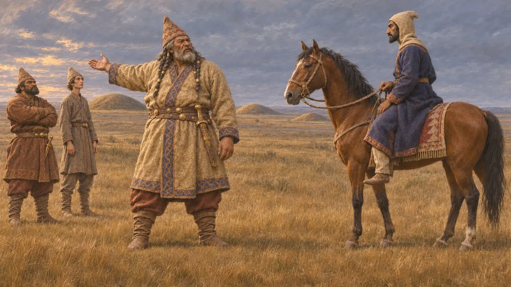

伊丹提尔苏斯是希罗多德给在伊斯特河以北迎战大流士大军的斯基泰王起的名字。在希罗多德的叙述中,他拒绝进行正面决战,将波斯人引入草原深处,并回应了大流士要他战或降的要求。这一名字仅见于希罗多德,现存的波斯或斯基泰文献中,尚无已知的文本提到他。
游戏中： 游戏仅在关于大流士斯基泰远征和伊斯特河桥议事的事件文章中提到伊丹提尔苏斯。他没有专属的人物、等级或机制。
希罗多德所说的他是谁
古代记述希罗多德称伊丹提尔苏斯为斯基泰人的一位国王,并指出他就是迎战大流士的统帅。他说另外两位斯基泰国王斯科帕西斯和塔克萨基斯也加入了他的阵营,因此防御由三位统治者及其各自的族群共同承担。
Herodotus 4.120
以撤退代替战斗
古代记述希罗多德说,斯基泰人既没有城镇,也没有需要守卫的田地,所以在波斯人面前不断后撤,堵塞水井,赶走牲畜。他们把波斯人引在身后,并用骑兵袭扰出外征粮的人。依这种说法,大流士无法迫使对方进行一场决定性的会战。
Herodotus 4.120-4.125

致大流士的消息
古代记述希罗多德记载,大流士派一名骑手去见伊丹图尔苏斯,问他为何一直逃跑,为何既不迎战也不臣服。伊丹图尔苏斯答道,他所做的并无异常,斯基泰人既没有城市也没有庄稼可失,而当大流士试图骚扰斯基泰人祖先的坟墓时,就会知道他是什么人。他还说,大流士不是他的主人。
Herodotus 4.126-4.127
鸟、鼠、蛙与箭
后世传说希罗多德说,斯基泰人送给大流士一只鸟、一只老鼠、一只青蛙和五支箭。大流士把它理解为献上土和水的臣服,而戈布里亚斯则解读为一种警告:除非波斯人像鸟、老鼠或青蛙那样逃走,否则就会被箭射中。这一幕带有道德寓言的形态,也无法与任何其他史料相互印证。
Herodotus 4.131-4.132
史家如何看待这场远征
争夺中希罗多德把这次远征描述为一场失败,把大流士的撤退描述为一次死里逃生。许多现代历史学家怀疑,此行的目的是否真的是消灭斯基泰人,并指出波斯人此后仍牢牢控制着色雷斯。希罗多德笔下那些有名有姓的斯基泰首领,在多大程度上反映了真实的人物,已无法确证。
P. Briant, From Cyrus to Alexander, 2002
来源
- Herodotus 4.120-4.132
- P. Briant, From Cyrus to Alexander, 2002